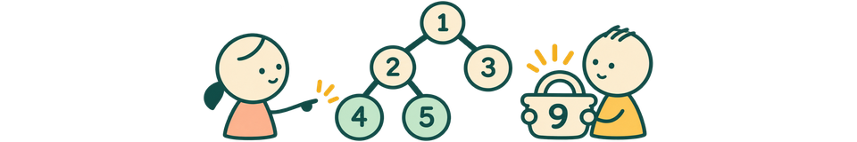

Deepest Leaves Sum
Only the deepest leaves contribute to the sum. The root is still putting "cross-functional leadership" on its resume.

Try #1302 on LeetCodeSum the values of the deepest leaves in a binary tree.
Only the deepest leaves contribute to the sum. The root is still putting "cross-functional leadership" on its resume.

Try #1302 on LeetCodeSum the values of the deepest leaves in a binary tree.